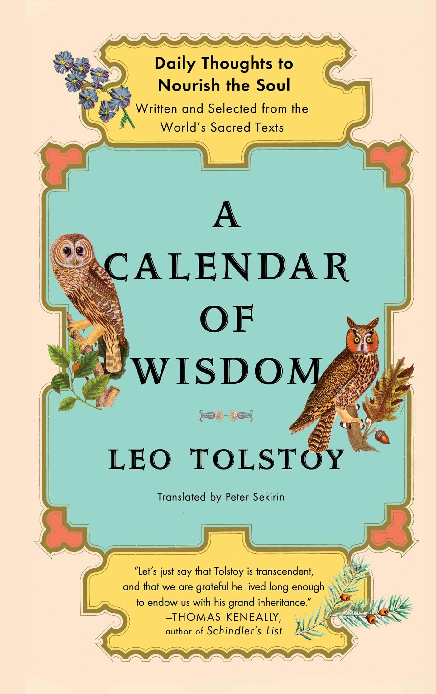

A Calendar of Wisdom, by Tolstoy
Friday December 31, 2021
In 2021, I followed Tolstoy's Calendar of Wisdom. It's a page-a-day calendar, circa 1910, with a little more gravitas. I like the concept but I don't always agree with Tolstoy.
"Guiding your thoughts is one of the keys to self-perfection." (August 9)
Tolstoy is quite religious, pacifist, vegetarian, and back-to-the-earth. He mixes quotes and paraphrases with his own commentary and aphorisms. I can't quite recommend it all because I find some things objectionable, but I like the idea of having something to reflect on daily. Some of my most and least favorite selections are below.

Not bad, Tolstoy
"To accept the dignity of another person is an axiom." (April 16)
"Effort is the necessary condition of moral perfection." (July 23)
"When a person tries to apply his intellect to the question “Why do I exist in this world?” he becomes dizzy. The human intellect cannot find the answers to such questions." (July 29)
"Think good thoughts, and your thoughts will be turned into good actions. Everything begins in thought. Guiding your thoughts is one of the keys to self-perfection." (August 9)
"Real goodness is not something that can be acquired in an instant, but only through constant effort, because real goodness lies in constantly striving for perfection." (September 4)
"You should abstain from arguments. They are very illogical ways to convince people. Opinions are like nails: the stronger you hit them, the deeper inside they go." (November 4, quoting Decimus Junius Juvenalis)
"The more urgently you want to speak, the more likely it is that you will say something foolish." (November 4)
No thanks, Tolstoy
"A marriage is a special obligation between two people, of opposite sexes, to have children only with each other. To break this pact is a lie, a deception, and a crime." (March 11)
"We can improve this world only by distributing the true faith among the world's people." (March 17)
"You should never feel depressed.
A man should always feel happy; if he is unhappy, it means he is guilty." (June 29)
"People know little, because they try to understand those things which are not open to them for understanding: God, eternity, spirit; or those which are not worth thinking about: how water becomes frozen, or a new theory of numbers, or how viruses can transmit illnesses." (July 27)
"Only religion destroys egoism and selfishness, so that one starts to live life not only for himself. Only religion destroys the fear of death, only religion gives us the meaning of life, only religion creates equality among people, only religion sets a person free from outer pressures." (August 18)
"It is dangerous to disseminate the idea that our life is purely the product of material forces and that it depends entirely on these forces." (August 22)
"Faith is the foundation on which all else rests; it is the root of all knowledge." (August 28)
"Though the mission of a woman's life is the same as that of a man's life and the service to God is fulfilled by the same means, namely love, for the majority of women the method of this service is more specific than for men. This is the birth and upbringing of new workers for the Lord throughout life." (December 1)
"There is nothing more natural for a woman than self-sacrifice." (December 1)